Home / MLP / Week 5 / Real questions
MLP week 5 - real exam questions
28 questions pulled from past papers whose wording matches this week's topics, newest first, duplicates removed. Pick your answers, then press Check answers. Figures and answer keys are the originals.
Elapsed 00:00
Which of the following implementations of LogisticRgression cannot be used to tackle multinomial multiclass problems?
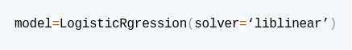
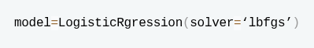
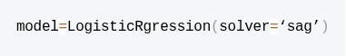
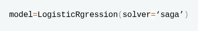
Identify the errors in the following code:

- include_bias has to be kept true for polynomial features.
- MinMaxScalar should be used for simple LinearRegression Models
- model.fit_transform should be replace with model.fit
- model.predict should be replaced with model.predict_proba
Select the correctly matched pairs of sklearn functions with the use of fit, fit_transform and transform.
- Learning the weights of logistic regression model on training data - fit_transform
- Creating a decision tree on the training data - fit
- fitting MinMaxScaler on test data - fit_transform
- fitting MinMaxScaler on train data - fit_transform
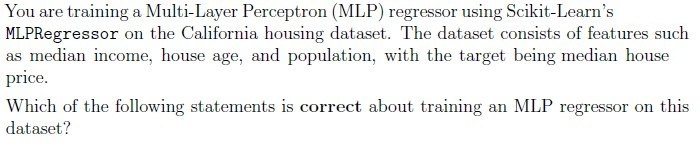
- Increasing the number of hidden layers always improves regression accuracy.
- Using the ReLU activation function in hidden layers is a good choice for MLPregression.
- The output layer should use a softmax activation to predict continuous houseprices.
- MLPRegressor does not require feature scaling since neural networksautomatically normalize input data.
Which of the following statements are true with regard to logistic regression?
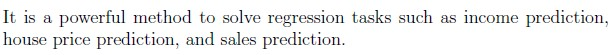
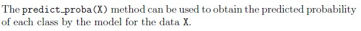
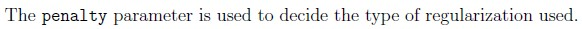
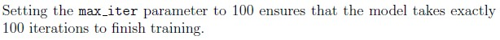
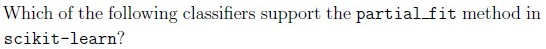
- GaussianNB
- LogisticRegression
- SGDClassifier
- RandomForestClassifier

- LogisticRegression
- Perceptron
- RidgeClassifier
- Support Vector Machine (SVM)
- LassoClassifer

- ’linear’
- ’quadratic’
- ’rbf’
- ’sigmoid’
Which of the following are valid loss functions for SGDClassifier?
- Squared Loss
- Hinge Loss
- Log Loss
- Mean Absolute Error
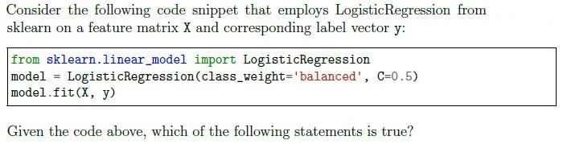
- The logistic regression model will use equal weights for both the classes in animbalanced dataset.
- The model does not use any regularization because the parameter C is set.
- The “balanced” mode uses the values of y to automatically adjust weightsinversely proportional to class frequencies in the input data.
- The value of C indicates that the model will apply a regularization.
Which of the following models are inherently multiclass models?
- Perceptron
- DecisionTreeClassifier
- KNeighborClassifier
- LogisticRegression
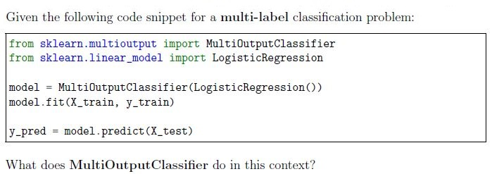
- Trains a single Logistic Regression model for all labels.
- Combines Logistic Regression with another model.
- Trains a separate Logistic Regression model for each label.
- Applies Logistic Regression in a one-vs-rest strategy for multi-classclassification.
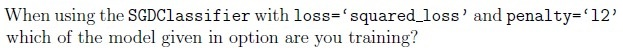
- LogisticRegression
- Perceptron
- RidgeClassifier
- Support Vector Machine (SVM)
What is the default loss value in SGDClassifier API and it gives which classifier?
- ‘log loss’, LogisticRegressor
- ‘log loss’, LogisticClassifier
- ‘hinge’, SVM
- ‘hinge’, Perceptron
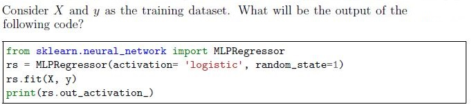
- logistic
- relu
- identity
- tanh
Which of the following observations warrant use of SGD model?
- The data set size is 1000 GB.
- The model has to be trained in non-iterative manner.
- The model must be a decision tree.
- The model must be a logistic regressor.
- None of these
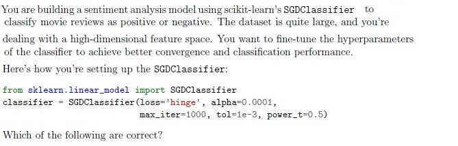
- The classifier is based on perceptron model.
- The classifier is based on logistic regression model.
- The learning rate decays every iteration.
- The learning rate is 0.0001.
- It will run exactly for 1000 iterations, which is independent of the data.
- None of these.
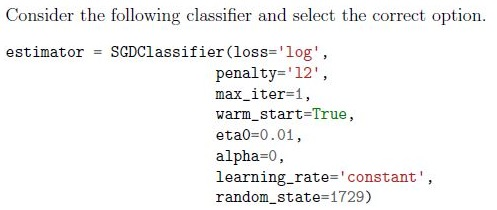
- It applies the perceptron classification with regularization.
- It applies the perceptron classification without regularization.
- It applies the logistic regression with regularization.
- It applies the logistic regression without regularization.
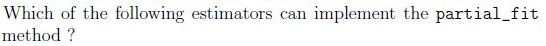
- MultinomialNB
- RandomForestRegressor
- LogisticRegressor
- SGDRegressor
You’re working on a binary classification problem where the dataset is relatively small, and you suspect that a linear decision boundary will work well due to distinct class separation. Additionally, you want to perform logistic regression with L1 regularization for improved feature selection. Which solver is most appropriate for this scenario?
- Newton-CG
- SGD
- LBFGS
- Liblinear
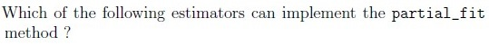
- DecisionTreeClassifier
- RandomForestRegressor
- LogisticRegressor
- SGDRegressor
Consider following code snippet:
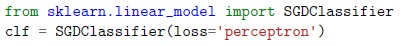
Consider following code snippet: Above classifier uses:- hinge but quadratically penalized.
- logistic regression.
- linear SVM.
- None of these.
- perceptron.
Which of the following statements correctly set L1 penalty to 0.2 and L2 Penalty to 0.8 in LogisticRegression?
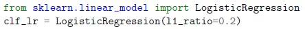
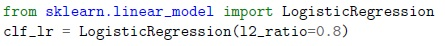
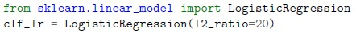
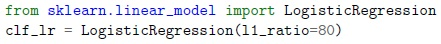
You have a binary classification problem to solve with following information: 1. All features are numircal. 2. The dataset has size of 80 GB. 3. The data has to be preprocessed. 4. After data preprocessing, train the model with gradient descent or its variations. Which of the following will perform the above task?
- Perform one hot encoding followed by training with LogisticRegression model(sklearn.linear_model).
- Perform standard scaling followed by asklearn.neighbors.KNeighborsClassifier model.
- Perform min-max scaling followed by a sklearn.tree.DecisionTreeClassifiermodel.
- Perform max-absolute scaling followed by asklearn.linear_model.SGDClassifier model.
Putting loss=hinge in class sklearn.linear_model.SGDClassifier(loss=’hinge’) dictates which of the following loss functions in SGDClassifier?
- hinge but quadratically penalized
- logistic regression
- linear SVM
- None of these
Which of the following options represent the possible type of machine learning algorithm does the cluster plot shown in Figure 2 demonstrate?
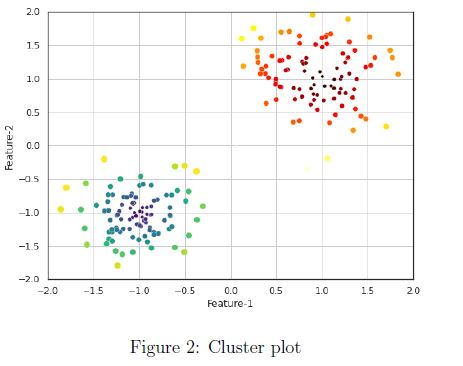
Which of the following options represent the possible type of machine learning algorithm does the cluster plot shown in Figure 2 demonstrate?- K-means clustering
- Linear regression
- Logistic regression
- PCA
Consider X and y as the training dataset. What will be the output of the following code?
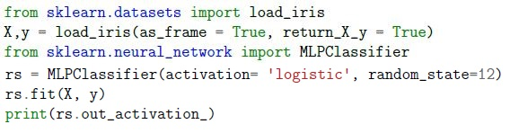
Consider X and y as the training dataset. What will be the output of the following code?- logistic
- relu
- identity
- softmax
Which of the following is/are true about the following block of the code?
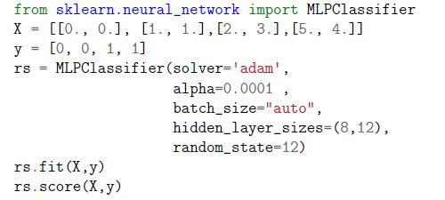
Which of the following is/are true about the following block of the code?- Given dataset belongs to binary classification.
- Number of neurons in the 1st hidden layer is 8.
- Strength of the L1 regularization term is 0.0001
- The activation function for the output layer in the given code is the ′logistic′function.